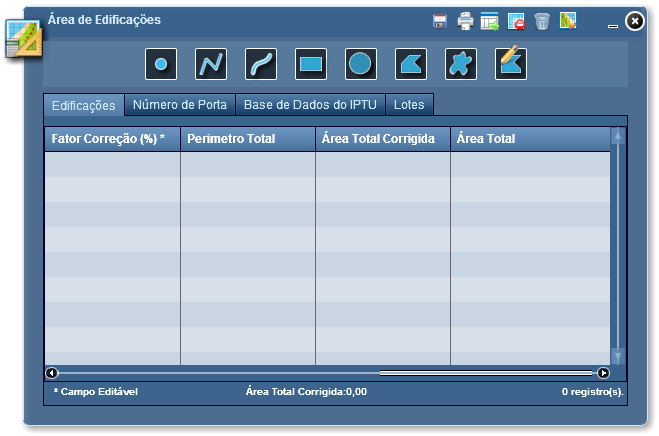
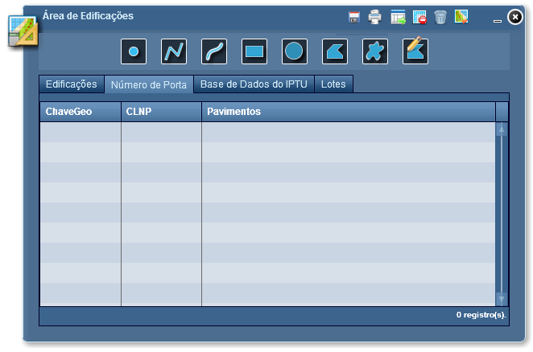
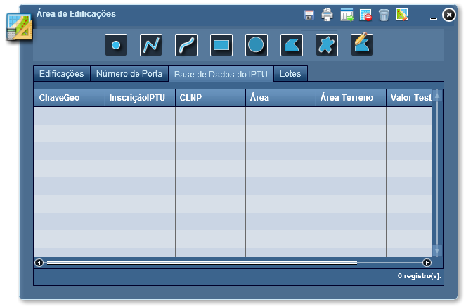
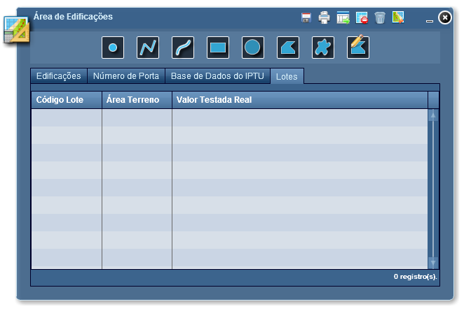

Verificar Área de Edificações
A ferramenta Área de Edificações, permite pesquisar edificações e analisar suas informações.
Visão geral sobre os controles que compõem a funcionalidade Área de Edificações:
Desenhar Ponto: desenho de ponto para seleção de itens;
Desenhar Linha: desenho de linha para seleção de itens;
Desenhar Linha à Mão Livre: desenho de linha à mão livre para seleção de itens;
Desenhar Retângulo: desenho de retângulo para seleção de itens;
Desenhar Círculo: desenho de círculo para seleção de itens;
Desenhar Polígono: desenho de polígono para seleção de itens;
Desenhar Polígono à Mão Livre: desenho de polígono à mão livre para seleção de itens;
Desenhar Edificação: desenha um polígono de edificação;
Salvar Edificações Desenhadas: salva edificações desenhadas com a ferramenta "Desenhar Edificação";
Imprimir Resultados: imprime a listagem de edificações;
Exportar para Excel: exporta resultados das analises para arquivo em Excel;
Remover item: remove itens selecionados das listagens;
Limpar Resultados: limpa resultados listados e feições adicionadas sobre as edificações;
Fechar: fecha janela da ferramenta Área de Edificações;
Minimizar: minimiza janela da ferramenta Área de Edificações.

As seguintes informações poderão ser editadas:
Lista de resultados das edificações com número de porta.

Lista de resultados das edificações que contém base de dados IPTU.

Lista de resultados de lotes encontrados por meio de buscas.

Obs.: Esta funcionalidade estará disponível apenas para o usuário com perfil IPTU.